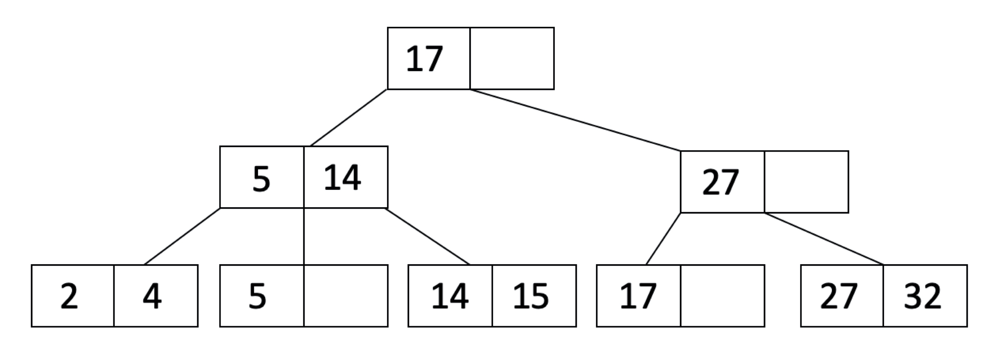

"MOOCbase" Relational Database
UC Berkeley - Fall 2020
Overview
For my Database Systems class at UC Berkeley, I worked with my friend Stephanie Djajadi to implement a functional relational database in Java. The database project was split into 4 parts: indexes, query optimization, concurrency, and recovery. We implemented B+ Tree data structures for our indexes in order to provide efficient record lookup. For query optimization, we implemented join algorithms to create more runtime options, and the System R algorithm in order to search for the optimal query plan based on runtime and interesting orders. For concurrency, we implemented 2 Phase Locking (2PL) constraints so that multiple transactions can run at once in the database while preventing data inconsistencies. Lastly, for recovery, we implemented the ARIES Recovery algorithm to increase database resiliency after a crash. We completed the project over the course of 4 months, and added to the growing codebase at each step of the project.
Part 1: B+ Trees

An index is a data structure that "efficiently retrieve[s] records from the database files" and speeds up lookups (or "reads") on a specific key, usually a column in a data table (tutorialspoint). A B+ Tree is a type of index where key entries are sorted in a balanced tree structure. Traversing down a B+ Tree to a leaf where records are stored is similar to a Binary Search Tree. We implemented key functionalities of the B+ Tree data structure like insertion, deletion, and bulk loading (which is an efficient process for when a large sequential series of keys need to be inputted to a B+ Tree).
Part 2: Joins and Query Optimization

For optimization, we started by implementing various join algorithms so that the queries that need to join data from two data tables could have different runtime options. We implemented external merge sort, sort merge join (SMJ), block nested loop joins (BNLJ), and Grace Hash joins. After completing the functionalities of all of the join algorithms, we moved onto implementing the System R query optimization algorithm. This algorithm reduces the runtime of a query by following a protocol that chooses how to access and join tables together using the lease number of IOs. IOs stand for input/output, and the larger the number of IOs, the longer the runtime of a query. System R runs in several passes where each pass chooses the lease cost access or join algorithm to complete the steps of a given query.
Part 3: Concurrency
In order to allow for multiple processes to access and use the database at once, we had to implement a protocol to prevent various resources in the database from becoming inconsistent. In a database system, a transaction is "a single unit of logic or work, sometimes made up of multiple operations" (Wikipedia). One transaction could try to access multiple tables and make updates to a data records in on of those tables. inconsistencies can arise if two transactions both tried to read and then update the same data table. The transaction that goes second may not have read in the changes of the first transaction before adding its own changes. Which version of the updated table would be correct? To deal with issues like this, we incorporated 2 Phase Locking protocol so that transactions must acquire a "lock" on a resource before making changes. The locks ensure that transactions without proper locks won't be able to make changes and lead to inconsistencies. The protocol is called "2 phase" because there is first an "expanding phase" where transactions can only acquire locks. The second phase is the "shrinking phase" where transactions can only release locks.
Part 4: Recovery
In the last part of the project, we implemented the ARIES Recovery algorithm which implements a protocol that allows for the database to undo and redo in the event of a crash. The ARIES Recovery algorithm follows the log of the actions that different transactions took in order to know what changes to undo or redo.